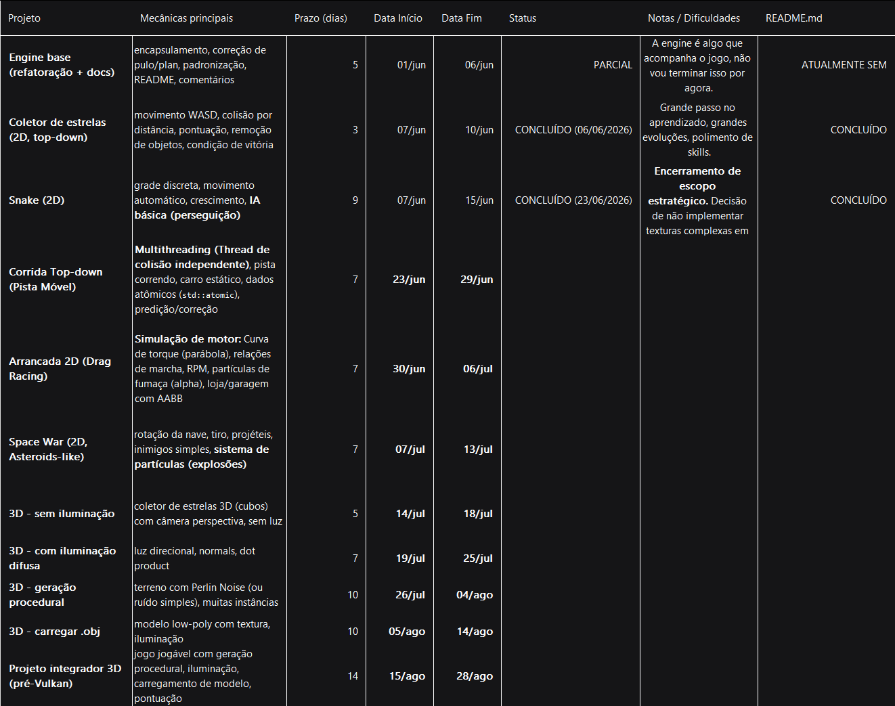
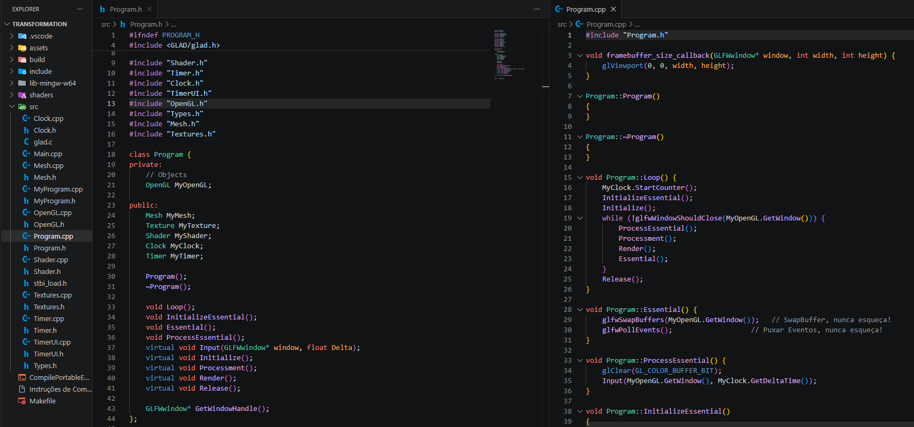
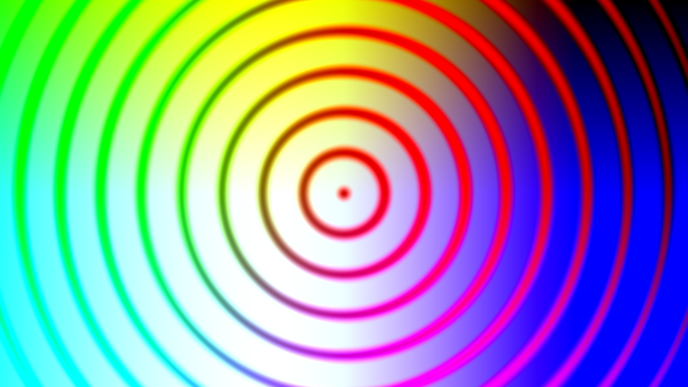

News & DevLog
Página: 1
Registro cronológico de atualizações, marcos de estudo e progresso técnico.
Planilha com planos pra 2026 (pode haver modificações de prazo, é apenas um guia):
Planilha com planos pra 2026 (pode haver modificações de prazo, é apenas um guia):

DATA: 10 de Julho, 2026
ASSUNTO: Declaração de nova metodologia de aprendizado.
ASSUNTO: Declaração de nova metodologia de aprendizado.
Inteligência Artificial.
Este é um post curto, simples. Criei ele, e mesmo fora do roteiro padrão semanal, quero usar dele pra mostrar que não vou mais usar inteligências artificiais.
Percebi como isso, mesmo que eu nunca tenha usado para criar o código por mim (nem mesmo Microsoft Copilot) e sim apenas para saber como, isso deteriora a sensação e profundidade de aprendizado;
recentemente observei como programadores antigos e famosos prodígios como John Carmack estudavam, e era sem IA, com blogs, livros, fóruns, e veja onde estão: no topo. Eu não quero mais depender delas.
Quero ser independente nos estudos, por isso, hoje, dia 10 de Julho de 2026, declaro que NUNCA MAIS irei usar IA nos estudos de programação -- apenas fóruns, blogs e documentação, mesmo que demore mais
o resultado será mais profundo. Obrigado.
Mais tarde, nessa semana, irei trazer novas atualizações em relação ao meu aprendizado -- as novas atualizações do UpRace já estão no ar:
DATA: 06 de Julho, 2026
ASSUNTO: Registro e relatório das últimas semanas
ASSUNTO: Registro e relatório das últimas semanas
Contexto
Não importa se eu sumi. Portanto, o que se deve questionar é a minha disciplina, é terrível ter que registrar isso toda semana, e eu não tenho tanta capacidade de me reescrer
assim. Entretanto, devo registrar meu progresso; seja pelo futuro ou pela minha própria motivação e reflexão. Primeiramente, devo dar um aviso de que não, metaprogramação NÃO é
pra chamar atenção de ninguém, esse é um assunto que me chamou mais atenção que o próprio baixo nível em si, e suas vertentes em programação funcional, orientada a dados, orientada
a objetos, genérica e procedural, ainda me despertam interesse tanto quanto em computação gráfica e sua matemática aplicada.
Progresso
Desde que sumi, tive diversos progressos, não principalmente em computação gráfica, mas se aplica também; tive uma idéia para o meu TCC e decidi aplicar, e sim, tenho bastante tempo
até o terceiro ano do ensino médio (estou no primeiro), mas se até lá eu fizer, sem pressa e com interesse real, vai ser mais vantajoso do que empurrar com a barriga até lá. E afinal,
qual é a minha ideia de TCC? Você pode ver o código-fonte aqui. Ele se trata de um Gerenciador de
Bibliotecas e Dependências com GUI (com Qt) e Auto Vinculação às Variáveis de Ambiente (ou, ao que tudo indica, gerador de script de compilação) com Interface Amigável para iniciantes;
claro que, esse é um escopo imenso, e justamente por isso decidi começar cedo e conciliar com a computação gráfica.
E qual foi o progresso? Foi a automatização e tomada de conhecimento de novas tecnologias: miniz, curl e C++26 (sim, há coisas incrívelmente fascinantes nessa atualização, abaixo conto mais). Não foi um progresso prático, mas no desenvolvimento acabei descobrindo tecnologias do C++ que podem mudar a forma como eu programo. Uma dessas coisas é o
E qual foi o progresso? Foi a automatização e tomada de conhecimento de novas tecnologias: miniz, curl e C++26 (sim, há coisas incrívelmente fascinantes nessa atualização, abaixo conto mais). Não foi um progresso prático, mas no desenvolvimento acabei descobrindo tecnologias do C++ que podem mudar a forma como eu programo. Uma dessas coisas é o
std::expectedstd::expected<valor_de_sucesso, enum_de_erro> funcao() {};
#include <meta>
#include <type_traits>
#include <iostream>
#include <expected>
#include <string>
#include <cstdint>
#include <print>
enum class ERRORCODE : std::uint8_t {
SUCCESS = 0x00,
FAIL = 0x01
};
template<typename TipoDesconhecido>
constexpr std::expected<TipoDesconhecido, ERRORCODE> SomarValores(const TipoDesconhecido& value_1, const TipoDesconhecido& value_2) {
if constexpr (std::is_integral_v<TipoDesconhecido> || std::is_floating_point_v<TipoDesconhecido>) {
return value_1 + value_2;
} else {
return std::unexpected(ERRORCODE::FAIL);
}
};
template<typename TipoDesconhecido>
constexpr auto InterpretarErro(const TipoDesconhecido& err) {
//if (std::meta::info(std::meta::type_of(TipoDesconhecido)) == (std::meta::type_of(ERRORCODE)))
// nao consegui ainda
return std::meta::identifier_of(std::meta::info(^^err));
};
int main() {
std::cout << "Valor: " << InterpretarErro(SomarValores(1.0f, 1.0f));
return 0;
}
E este foi meu progresso majoritário nessa semana; ainda há muita coisa para descobrir, e fico feliz com isso, adoro C++ e suas funcionalidades modernas.
E é isso, eu não estou tão animado para escrever isso hoje, portanto, não haverá tanto contéudo. Hoje (06/07/2026) após a pausa para o projeto EKLibraryManager,
voltarei à computação gráfica no UpRace, onde devo resolver a colisão; Obrigado pela atenção.
DATA: 17 de Junho, 2026
ASSUNTO: Registro e relatório das últimas semanas
ASSUNTO: Registro e relatório das últimas semanas
Falta de atualizações.
Há de se perguntar: por quê eu desapareci? E a resposta é: o céu de progresso. E sim, realmente sumi por bastante tempo e isso se deve à dois
importantes fatores: estudos e minha vida cotidiana (afinal tenho 16 anos e ainda tenho escola e outras coisas para conciliar); entretanto,
não foi razão para parar de estudar, continuei e hoje, dia 17 de Junho, vou relatar meu progresso desde meu último post (23 de Maio).
O Progresso.
Mal me lembro qual foi a última pauta que tratei da última vez, mas dessa vez será o desenvolvimento de jogos. Primeiramente, devo começar com o
"babado": eu fiz um post no Reddit (aqui),
alcançou pessoas de várias partes do mundo -- nem eu esperava por tanto -- e principalmente um menino da China, da mesma idade, que por privacidade não irei citar seu nome,
mas que ele é uma pessoa incrível para mim, dito que é raro encontrar pessoas focada em escopos semelhantes no nosso contexto. No fim, estamos
conversando no Discord agora, e espero que mutuamente sejamos amigos.
Agora sobre programação, de fato: foi um período espetacular, comecei a aprender desde Git e Markdown até coisas mais avançadas que andei olhando,
como metaprogramação e dedução de tipo. Foi uma semana de esclarecimento, defini escopos, projetos, metas, e além de apenas planejamento, eu CRIEI:
• StarCollector
Um jogo simples, mas um jogo. Onde você coleta estrelas dentro de um curto período de tempo. Com progressão infinita e aleatoriedade na geração de estrelas, leitura de arquivo .ini, introdução ao ImGui, Minisound, uso de funções lambda pra callback, GLM para transformações de matrizes, Makefile mais complexo.
• Leitor de arquivo .ini
Um leitor/parser simples para leitura de arquivos .ini para configuração. Usei fstream e detecção de cada índice da string.
• LittleSnake
E o atual projeto: LittleSnake. À princípio, um jogo snake comum mas tenho planos de colocar mecânicas, entretanto, terei que aprender mais otimizações, pois meu hardware não está aguentando tão bem fazer várias chamadas de desenho.
• Dentre outros
• StarCollector
Um jogo simples, mas um jogo. Onde você coleta estrelas dentro de um curto período de tempo. Com progressão infinita e aleatoriedade na geração de estrelas, leitura de arquivo .ini, introdução ao ImGui, Minisound, uso de funções lambda pra callback, GLM para transformações de matrizes, Makefile mais complexo.
• Leitor de arquivo .ini
Um leitor/parser simples para leitura de arquivos .ini para configuração. Usei fstream e detecção de cada índice da string.
• LittleSnake
E o atual projeto: LittleSnake. À princípio, um jogo snake comum mas tenho planos de colocar mecânicas, entretanto, terei que aprender mais otimizações, pois meu hardware não está aguentando tão bem fazer várias chamadas de desenho.
• Dentre outros
Metas
Claro que é difícil de listar todo meu progresso desde o último post, mas isso se deve ao longo intervalo de tempo entre os dois; de toda forma,
isso é bom para rever meu progresso e listar o que ainda desejo aprender e desejo criar nesses próximos dias:
• Instanced Draw: evitar diversas chamadas de desenho por quadro, atualmente estou percorrendo o contâiner, isso é insustenável.
• Makefile: aprender ainda mais como deixar meu código simples de usar.
• Git: uma ferramenta absurda de útil.
• Um pouco de template e metaprogramação: dois conceitos que me amarro, apesar de ter vocação em programação gráfica.
• Otimizações de baixo nível: talvez seja cedo pra dizer isso (afinal nem estudo Vulkan ainda), mas é algo que tenho interesse de aprender.
• Geração procedural de textura: acredito que seja um conceito muito legal de se aprender.
• Continuar meu projeto LittleSnake: ainda há bastante coisa a se criar, mas mal posso esperar pelas mecânicas.
• Melhorar meu Networking.
• Melhorar a abstração em código e estabelecer conceitos do OpenGL.
• Criar uma Engine-Style própria, nem que seja simples.
• Instanced Draw: evitar diversas chamadas de desenho por quadro, atualmente estou percorrendo o contâiner, isso é insustenável.
• Makefile: aprender ainda mais como deixar meu código simples de usar.
• Git: uma ferramenta absurda de útil.
• Um pouco de template e metaprogramação: dois conceitos que me amarro, apesar de ter vocação em programação gráfica.
• Otimizações de baixo nível: talvez seja cedo pra dizer isso (afinal nem estudo Vulkan ainda), mas é algo que tenho interesse de aprender.
• Geração procedural de textura: acredito que seja um conceito muito legal de se aprender.
• Continuar meu projeto LittleSnake: ainda há bastante coisa a se criar, mas mal posso esperar pelas mecânicas.
• Melhorar meu Networking.
• Melhorar a abstração em código e estabelecer conceitos do OpenGL.
• Criar uma Engine-Style própria, nem que seja simples.
Resumo
Esse foi um post para colocar na mesa tudo que estava pendente, desde as tecnologias que aprendi (ImGui, Minisound, Git, Makefile, Markdown, README.md),
até toda minha evolução social (amigos de outros países e colegas de faculdade). Claro que não vou conseguir relatar tudo, mas tentei descrever meu progresso ao máximo.
no início dessa página você poderá ver minha planilha de metas para esse ano, apesar de estar no primeiro ano do ensino médio e ainda com 16 anos, espero chegar a um
bom nível nesse ano, talvez a ponto criar meu "mini TCC".
De toda forma, seja lá quem esteja vendo isso, agradeço por ler. Continuarei estudando até atingir meus objetivos, mesmo quando o ânimo atingir zero, como pode estar acontecendo agora, mas não vou desistir.
De toda forma, seja lá quem esteja vendo isso, agradeço por ler. Continuarei estudando até atingir meus objetivos, mesmo quando o ânimo atingir zero, como pode estar acontecendo agora, mas não vou desistir.
DATA: 23 de Maio, 2026
ASSUNTO: Registro da semana - física, matemática, multi renderização.
ASSUNTO: Registro da semana - física, matemática, multi renderização.
Física, Matemática e Multi-Renderização
Esta foi uma semana importante, tanto esta quando a última, que na qual não tive tempo de postar. Tive diversas evoluções, sentimentos de lacunas, dúvidas e
descobrimentos, desde renderização de 1000 cubos até compreensão matemática sobre matrizes de quatro dimensões dentro do OpenGL; abaixo explico melhor cada
uma dessas evoluções.
Primeiro, começando cronologicamente, aprendi a renderizar um cubo em 3D, usando vértices do capítulo "Coordinate System" do learnopengl.com, consegui
renderizar um cubo, mesmo que à princípio não tenha entendido todos conceitos matemáticos, tive capacidade de renderizar e ajustar os SetAttribPointer()
para receber os vértices. Essa lacuna que senti matematicamente foi a virada de chave para buscar melhor compreensão: junto do auxílio de IAs como professores
na minha jornada, descobri o canal 3Blue1Brown — um canal de matemática e, principalmente, álgebra linear — que me serviu e extrema ajuda pra entender os
conceitos de vetores, matrizes, e muitos outros tópicos. Isso sem dúvidas, abriu minha mente dentro da programação gráfica.
Seguindo nas evoluções, consegui ainda renderizar vários cubos na tela, mudando suas posições e usando draw novamente; ainda nessa onda, fiz um programa
separado chamado "NumberGenerator", que usa Mersenne Twister como gerador de números, e criei diversos glm::vec3() pra mudar de posição; isso e tantas
outras coisas, como criação de classes (Mouse, Keyboard) abriram minha mente para uma "mini engine", onde pensei em lógicas de redraw para texturas em
jogos 2D, e onde também criei uma nova função dentro do game loop: processPhysics(), que vai processar toda a física de jogo, como queda, aceleração e
muitas outras coisas. Logo esse novo projeto estará no GitHub, ainda faltam coisas para implementar, como classe Camera, que percebi que para todo objeto
3D no OpenGL sempre será a mesma matriz view e projection. No fim, essas foram semanas muito produtivas, consegui renderizar diversos objetos, fazer uma
câmera móvel, e muitas outras coisas, entretanto, como toda fase, também houveram dúvidas e lacunas: ainda preciso fortalecer minha matemática de álgebra
linear e trigonométrica, também tive dúvidas quanto se a minha base está suficiente, se eu conseguiria explicar para alguém leigo do assunto (que para mim,
é o ápice do bom aprendizado, conseguir explicar para alguém por fora), mas nada disso deve me travar; sei que não é sobre decorar, mas sobre saber usar,
espero estar seguindo o caminho correto.
Conceitos aprendidos na semana
• Álgebra linear básica: matrizes e vetores (3Blue1Brown, desenhos no paint), jota chapéu, i chapéu e k chapeu, soma e multiplicações;
• Uso da quarta coordenada W;
• Redraw em novas posições (próx.: renderização instanciada);
• Uso de structs com peso e decrementador de posição com constante de aceleração gravitacional para objetos com física;
• Abuso de índices para modificar "objetos" específico no loop for.
• Uso da quarta coordenada W;
• Redraw em novas posições (próx.: renderização instanciada);
• Uso de structs com peso e decrementador de posição com constante de aceleração gravitacional para objetos com física;
• Abuso de índices para modificar "objetos" específico no loop for.
Práticas da semana
• Renderização de 1000 cubos;
• Renderização 3D;
• Física de queda e chão;
• Renderização de um "chao" com textura de grama;
• Criação de uma tool para geração de posições;
• Criação de classes Mouse e Keyboard com captura de estado;
• Etc.
• Renderização 3D;
• Física de queda e chão;
• Renderização de um "chao" com textura de grama;
• Criação de uma tool para geração de posições;
• Criação de classes Mouse e Keyboard com captura de estado;
• Etc.
Metas para as próximas semanas
• Geração procedural 3D de cubos com posições Y diferentes com Perlin Noise (vi um vídeo na internet onde o desenvolvedor renderizou um mundo com montes e
vales com renderização procedural);
• Criação de classe Camera;
• Aprofundamento em matemática, álgebra linear, trigonometria, transformações, sistema de coordenadas;
• Fortalecimento da base Getting Started (estou entrando na aba Camera);
• Pequeno projeto jogável;
• Pegar um projeto open-source e destrinchar.
• Criação de classe Camera;
• Aprofundamento em matemática, álgebra linear, trigonometria, transformações, sistema de coordenadas;
• Fortalecimento da base Getting Started (estou entrando na aba Camera);
• Pequeno projeto jogável;
• Pegar um projeto open-source e destrinchar.
Esteja alguém vendo ou não, tento registrar meu progresso aqui e no GitHub; eu genuinamente gosto do que eu estudo e não faço isso por pressão,
minha paixão por computação gráfica e desenvolvimento de jogos não veio por uma pressão, mas sim exploração, e vejo que isso é a minha verdadeira
vocação: a cada dia que estudo isso eu me sinto mais empolgado em evoluir; entretanto, meu maior medo e ter uma base fraca. Se houver qualquer
crítica a me fazer, me envie um email em eriksander5252principal@hotmail.com.
DATA: 09 de Maio, 2026
ASSUNTO: Registro da semana
ASSUNTO: Registro da semana
Progresso no OpenGL
Aqui vou resumir meu progresso nos estudos de programação web e computação gráfica das duas últimas semanas (25/04/2026 - 09/05/2026).
OpenGL
Antes de começar sobre OpenGL, preciso dar um aviso de que enssa última semana eu não tive tempo de atualizar este site, então ele continuou como esteve. Agora, sobre OpenGL, tive
algumas evoluções significativas, já que se passaram duas semanas. As maiores são a implementação de texturas e arquitetura dentro do código, onde que através da prática, tive melhor
consolidação para fazer classes e objetos de Mesh, Texture e Program.
Como o próprio nome diz, Mesh é responsável pelos objetos dentro da nossa cena, ainda sem um MeshManager porque fazê-lo agora seria overnegeneering, principalmente que, mesmo que tivesse
capacidade de abstrair VAO, VBO e EBO, eu não tenho necessidade ou maestria suficiente pra criar uma classe sem ser um desastre; por enquanto vou manter classes que gerenciam apenas um
VAO, VBO e EBO. Texture é o mais óbvio, cuida da textura de um objeto; tem estrutura e a mesma lógica dos objetos de buffer, com máquina de estados e configurações, entretanto, ainda
há conteúdos que me confundem, como ter que criar um novo ID de textura para usar outro slot de textura.
Quanto à arquitetura, eu implementei um estilo que evite mexer com OpenGL boilerplate. você pode ver este código na recente adição que fiz ao repositório em MyProgram.
Não está perfeito e está muito longe disso, mas de acordo com que venho aprendendo, foi um bom exercício para consolidar e aprender mais sobre Gráficos.

Todavia, esta foi uma semana bem produtiva, saí de triangulos de cores sólidas para interação de usuário, efeitos em shader GLSL, encapsulamento, GameArchitecture, entre outras coisas.
Sei que ainda há diversas coisas a melhorar, e abaixo minha cabeça quanto à isso, sei que sempre haverá melhorias e otimizações, e me sinto empolgado para aprender otimizar, polir, aprender,
e melhorar meu código.

DATA: 25 de Abril, 2026
ASSUNTO: Registro da semana
ASSUNTO: Registro da semana
Progresso no Currículo online e OpenGL
Aqui vou resumir meu progresso nos estudos de programação web e computação gráfica dessa semana (18/04/2026 - 25/04/2026).
Currículo Online
Nessa última semana eu não tive muito tempo para atualizar o site, vou tentar manter uma rotina de atualizar pelo menos uma vez por semana; no entanto, houveram algumas mudanças:
• Adicionei páginas Contato e Ferramentas (falta preencher); serão sobre contato e ambiente de estudos, respectivamente.
• Adicionei seção de páginas com JavaScript na página News & DevLog.
• Correção de pequenos erros em dispositivos portárteis.
• Porte de interface para mobile (incompleto).
Entre outras outras coisas.
• Adicionei seção de páginas com JavaScript na página News & DevLog.
• Correção de pequenos erros em dispositivos portárteis.
• Porte de interface para mobile (incompleto).
Entre outras outras coisas.
No momento, devido à escola e foco na computação gráfica, este site pode ter poucas atualizações, mas constantemente vou tentar fazer correções e adicionar funcionalidades.
OpenGL e Computação Gráfica
Nessa semana foquei muito nos estudos de OpenGL: até domingo passado eu estava na seção "Hello Triangle" do learnopengl.com,
mas fiz um intensivo de oito horas e saí da seção, nos dias seguintes fiz atividades de consolidação de conteúdo, tais como implementação de classe Shader, Timer, Clock, TimerUI e OpenGL,
cada um com suas responsabilidades.
Shader, como o próprio nome diz, controla todo o ciclo de shaders e abstrai o boilerplate (você pode visualizar meu código aqui),
leitura de shader externos, compilação, anexação e linkagem no programa de shaders, além de funções utilitárias. Clock por sua vez cuida do DeltaTime, Timer cuida da atualização para
o TimerUI, e TimerUI, cuida da saída de dados, em complemento do Timer. Fiz também uma classe OpenGL, apenas para abstrair e organizar o boilerplate da inicializção. Este foi um ótimo exercício para
consolidar o aprendizado.

Atualmente, no dia 25 de Abril, estou estudando shaders na seção de Shaders. Após ter consolidade relativamente bem o ciclo e componentes necessários, acredito estar pronto para seguir.
Acredito que esperar estar perfeito não é necessário e seguir praticando consolidará ainda mais. Ontem eu consegui me reestabelecer nos estudos e comecei a estudar shaders; fiz até um
shader simples sem o "copia e cola". Aprendi VAO, VBO, EBO, atributos e leitura de vértices.

Resumo
Mudanças no site, mudança de rotina, aprendizado de shaders e ciclo VAO, VBO e EBO; esta foi a minha semana. Logo vou criar e colocar um email para contato, se tiver alguma dica, crítica
ou algo do tipo, sinta-se livre para me enviar.
DATA: 19 de Abril, 2026
ASSUNTO: Passos finais da criação do blog/currículo online
ASSUNTO: Passos finais da criação do blog/currículo online
Primeiro post do site
Bom, como podemos ver, o site está quase pronto. Optei por cores escuras e design relativamente simples, é um site de HTML estático, não vi necessidade de JavaScript ou grandes animações. Ainda tenho
de terminar as outras páginas e preencher.
Pensei se deveria escrever em inglês ou português; se seguirmos o padrão mundial devo colocar inglês, mas não confio na minha gramática. Vou estudar mais e melhorar na escrita antes de trocar o idioma do site.
Este é um post de inauguração, na aba de DevLog; regularmente vou postar informações relevantes do meu progresso nos estudos.

Ainda há correções a serem feitas. Veja tela inicial: